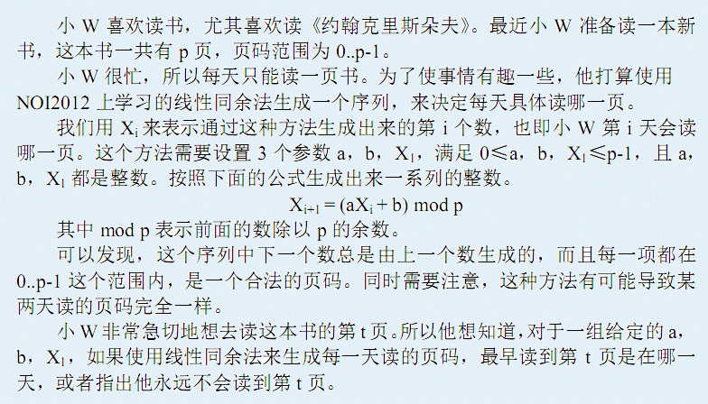

输入含有多组数据，第一行一个正整数T，表示这个测试点内的数据组数。 接下来T行，每行有五个整数p，a，b，X1，t，表示一组数据。保证X1和t都是合法的页码。
注意：P一定为质数
共T行，每行一个整数表示他最早读到第t页是哪一天。如果他永远不会读到第t页，输出-1。
3 7 1 1 3 3 7 2 2 2 0 7 2 2 2 1
1 3 -1
0<=a<=P-1,0<=b<=P-1,2<=P<=10^9